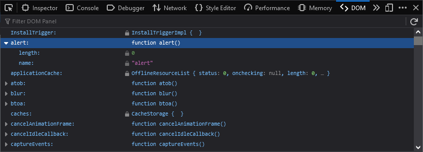
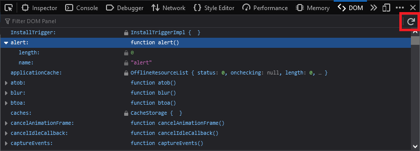
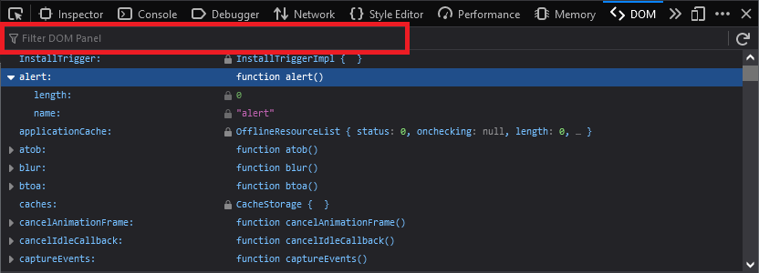

The DOM Property Viewer lets you inspect the properties of the {{Glossary("DOM")}} as an expandable tree structure, starting from the {{domxref("window")}} object of the current page or the selected iframe.

The DOM Property Viewer is not enabled by default. To enable it, open the developer tool settings and check the "DOM" box under "Default Firefox Developer Tools".
Once enabled, you can open the DOM Property Viewer by selecting "DOM" from the Web Developer submenu in the Firefox Menu Panel (or Tools menu if you display the menu bar or are on macOS), or by pressing its Ctrl + Shift + W keyboard shortcut.
The Toolbox will appear at the bottom of the browser window, with the DOM Property Viewer activated. It's just called "DOM" in the Toolbox.
The different properties of the DOM are displayed as an expandable tree. The left-hand side shows the property's name, and the right-hand side shows its value. Up to three properties of an object and items of an array are displayed. If a property has more elements than this, you'll see a "more..." annotation, and will need to click the property to see all elements. A lock icon indicates that a property is not writable.
If the DOM changes you can hit the Refresh button to update the display:

There is a search box within the toolbar:

This filters the list to show only items which match the search term. Items match the search term if their name contains the search term. Matching is case-sensitive.